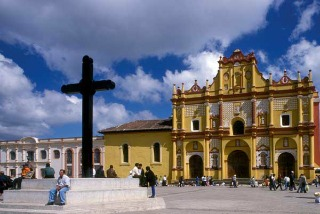
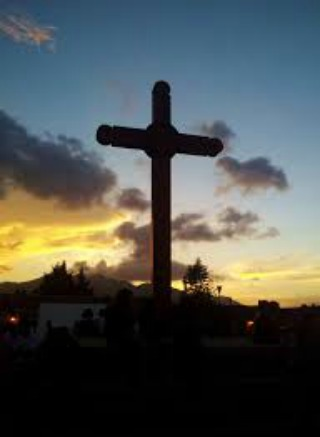
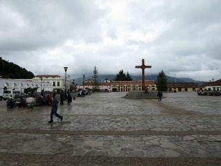
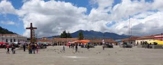
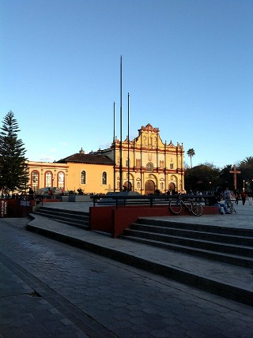

La plaza de la paz fue construida el mismo año que se contruyó la catedral de San Cristóbal de las Casas (1533), esta plaza es un recinto dedicado a la catedral en el cual las personas religiosas que habitaban esta ciudad y turistas pudiesen admirar el estilo barroco de la iglesia y tomar un descanso a la salida de la catedral, hoy en día esta plaza también es utilizada para hacer diversas celebraciones y eventos de todo tipo.
Se encuentra ubicada en la avenida Crescencio Rosas entre las calles Guadalupe Victoria y 5 de febrero.
Si usted se encuentra ubicado en el arco del carmen camine 3 cuadras sobre el andador hasta llegar al palacio municipal y justo en frente vera la plaza de la paz.
En el lugar usted puede realizar actividades como:
* Fotografía
* Asistencia a parques públicos
* Compra de artesanía
* Visita a monumentos
* Asistencia a eventos científicos
* Asistencia a eventos culturales
* Asistencia a eventos gastronómicos
* Asistencia a ferias artesanales
* Asistencia a festivales de cine
* Asistencia a festivales de música
* Asistencia a festivales de rock
* Asistencia a festivales folklóricos
* Asistencia a festivales de ópera y ballet
* Manifestaciones religiosas





posicione el mouse sobre las imágenes